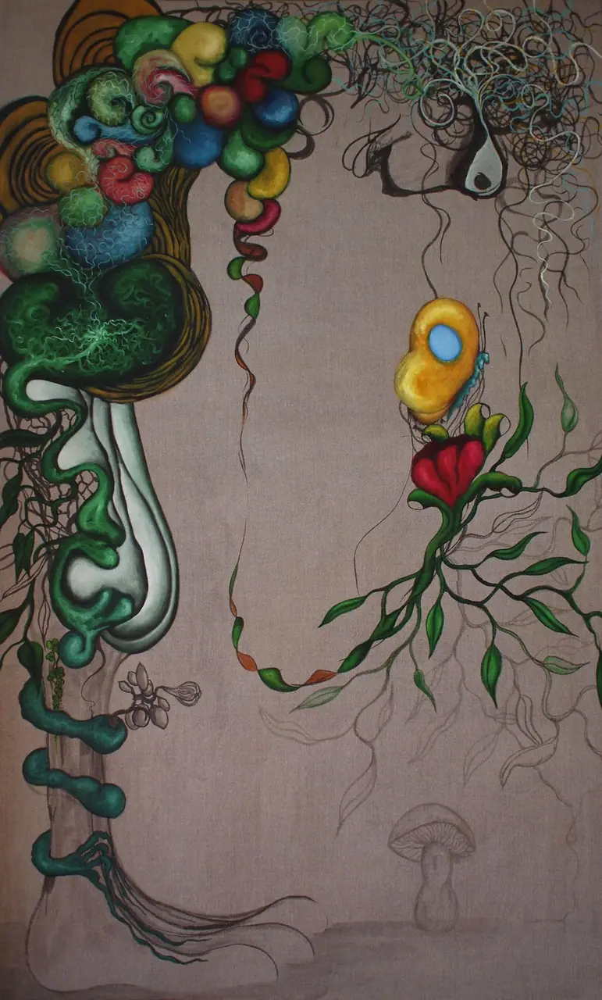

Fallow.
An artist's website shows you the years there was work. This one shows you the years there wasn't, at the same size, in the same list. There are two of them and they are the most interesting thing in the catalogue.
What a zero is
It is not proof that nothing was made. It is proof that nothing was kept, or nothing was catalogued, or nothing survived the moves — and the archive is careful enough to say which of those it can and cannot distinguish. It cannot. So the honest presentation is an empty row, not a gap in a timeline you scroll past without noticing.
Between these two zeroes sit a painting made in Montana and a painting made after walking out of the Gila Wilderness. Three years apart, and everything that happened in between is not here.


Kyle's childhood spent wandering the mountains of rural Montana imparted a deep and fundamental love for the wild; he is much more at home in the middle of wilderness than in the middle of civilization.
That is from the biography, and it is also, probably, what the two empty rows are. The thin years — 2016 with six works, 2017 with three — are the same story at lower contrast. 2017 in particular looks like almost nothing until you notice that Cyclum Lunarem is in it: one small gold-leafed panel painted every night for a lunar year. Three catalogue entries. Three hundred and sixty-five sittings.
Counting works is a bad proxy for working. Every site that shows you an artist's output as a bar chart is quietly making that mistake, including this page, which is why it says so here.
The catalogue at archive.kyleparkercunningham.com is a record of objects. It is very good at that and it should not be asked to be anything else. But an object-record has no way to hold a fallow year, a walk, a fire season, or a night spent looking up — and those are not gaps in the work. They are the work, before it had a catalogue number.